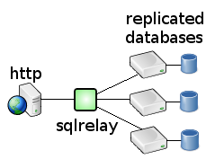
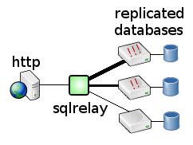

Solves - "I wish there was a cheap and easy way to automatically distribute traffic to the nodes in my database cluster and manage outages."
In a database cluster or replication environment, the SQL Relay server maintains a pool of connections to the various database nodes and distributes client sessions over the pool. SQL Relay even supports disproportionate distribution of load. If some nodes are more powerful than others, then SQL Relay can be configured to send more traffic to the more powerful nodes.
|  |  |
If a node fails, the SQL Relay server will attempt to reestablish connections to that node, while continuing to distribute client sessions over the remaining nodes.
Note that SQL Relay cannot currently be used to replicate databases or keep replicated databases synchronized. If you are using SQL Relay to access replicated databases then it is assumed that there is some means by which the databases are kept synchronized external to SQL Relay.
SQL Relay supports two front-end high availability strategies as well. Multiple instances of SQL Relay can be placed behind a load-balancing appliance, or round-robin DNS can be used to provide load-balancing and fail-over over multiple instances of SQL Relay.
{kind=link}